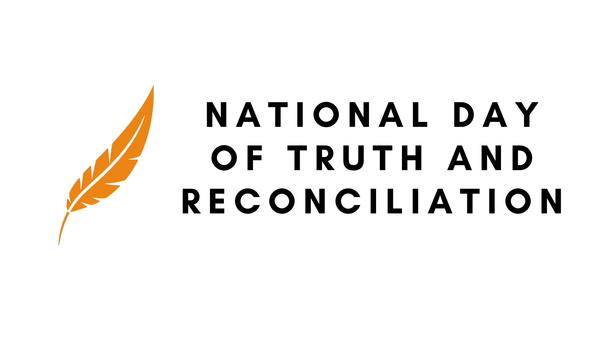

September 20, 2021 is the first National Day for Truth and Reconciliation. On this day, we wear orange to honour the lost children and the survivors of residential schools. The Truth and Reconciliation Commission was established in 2015 to investigate the abuses of the residential school system. They called upon the federal government to make a statutory holiday, a National Day for Truth and Reconciliation. On this day, all federally regulated workplaces will be closed. Many provinces and territories have marked the day for students to stay at home to commemorate, however, Alberta, Saskatchewan, New Brunswick, Quebec and Ontario have chosen not to do so.
Starting in the 1870s, more than 150,000 First Nations, Metis and Inuit children were forced into government-funded and church-run schools, these schools were known as residential schools. Children at these schools were physically, sexually and mentally abused by the teachers. Indigenous children were given “English” names and forbidden to speak their own language or celebrate their culture. These schools were efforts made by the Canadian government to assimilate Indigenous children into Euro-Canadian culture. The last residential school did not close until 1997. Over 130 residential schools were operating between 1831 and 1996. About 6000 children died at residential schools and unfortunately there could be more as the records are incomplete.
Recently, there have been many undocumented and unmarked graves found near residential schools across Canada. This is an act of genocide and human rights violation. As of September 30, 2021, there are a total of 1874 gravesites found at residential schools. Currently, many indigenous communities are leading the investigation for unmarked graves. We hope that the children and adults that never made it home can finally do so and that justice is brought to them.
https://www.cnn.com/2021/07/13/americas/canada-unmarked-indigenous-graves/index.html
https://www.cbc.ca/news/canada/first-national-truth-reconciliation-day-1.6188540
https://www.canada.ca/en/canadian-heritage/campaigns/national-day-truth-reconciliation.html